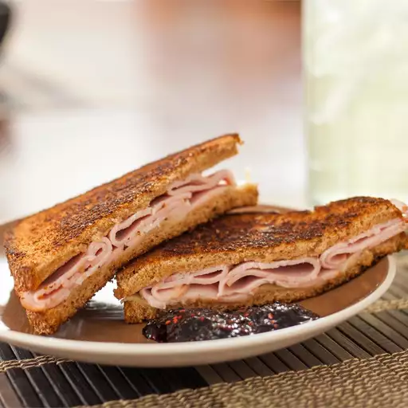

Sweet and Spicy Turkey Sandwich

Description
This sandwich has a good combination of sweet and spicy flavor.
Ingredients
- 2 slices (1/2 inch thick) hearty country bread
- 4 slices roasted turkey breast
- 1 slice pepperjack cheese
- 2 teaspoons butter
- 4 teaspoons strawberry preserves
Steps
- Heat a small skillet over medium heat. Butter one side of each of the bread slices with one teaspoon butter. Place one slice, butter side down, in the skillet. Top with the turkey and cheese slices. Place the second slice of bread on top, butter side up.
- When the first side of the sandwich is golden brown, turn and brown the other side, 3 to 5 minutes per side, or until the cheese begins to melt.
- Remove sandwich to a plate and top with strawberry preserves, or serve the preserves on the side.